Equipamiento de entrenamiento y cancha, personalizado con los colores y el escudo de cada club
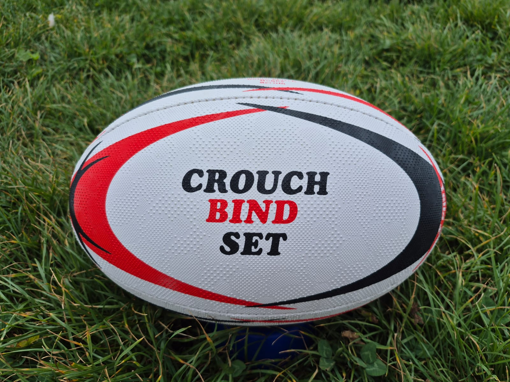
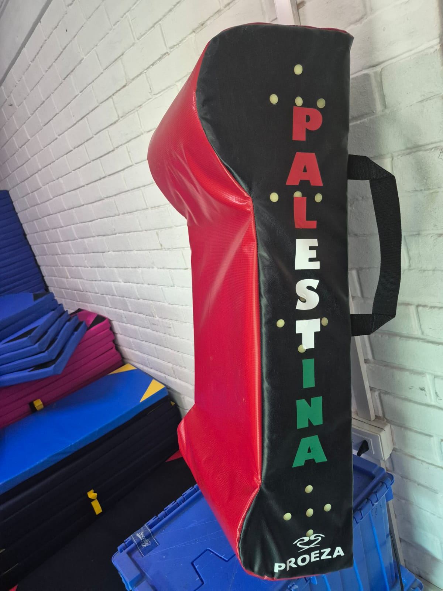
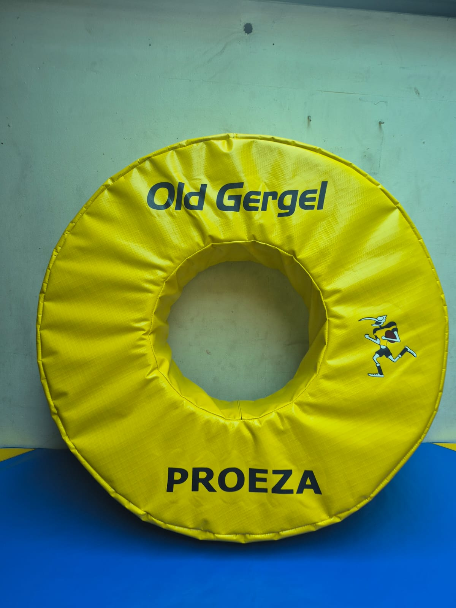
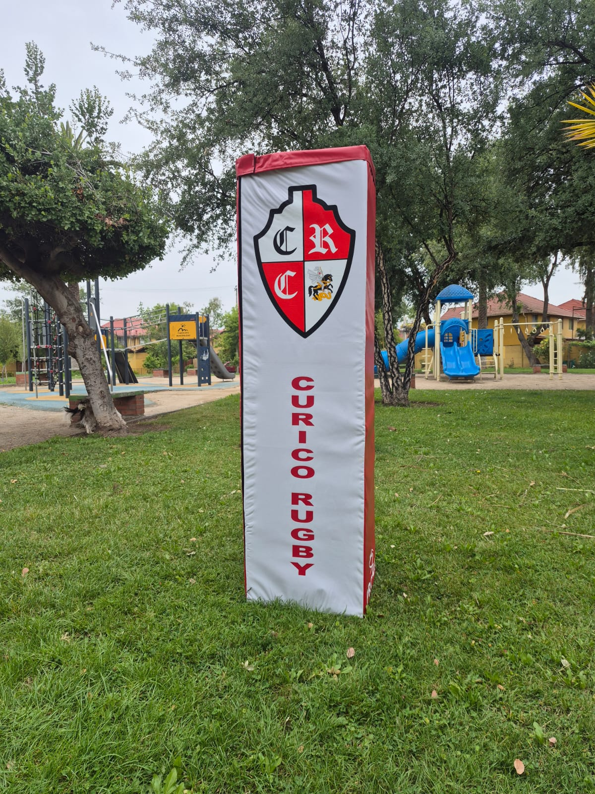
Productos para cubrir el entrenamiento de contacto y la cancha del club: balones de marca propia o personalizados, escudos, sacos y ruedas de tackle, y cubre postes. Cada pieza se fabrica a pedido, con los colores, el escudo y el nombre del club, y con materiales de gran calidad y durabilidad, pensados para el uso diario.
| CÓDIGO | PRODUCTO | USO | FICHA |
|---|---|---|---|
| IMP-01 | Balón de rugby Match y entrenamiento | Partido y entrenamiento en todas las categorías | Ficha 01 |
| IMP-02 | Escudo de tackle | Prácticas de contacto y ejercicios varios | Ficha 02 |
| IMP-03 | Saco de tackle | Prácticas de contacto y ejercicios varios | Ficha 03 |
| IMP-04 | Rueda de tackle | Prácticas de contacto, salida de balón del medio scrum y ejercicios varios | Ficha 04 |
| IMP-05 | Cubre poste | Protección de los jugadores en la base de los postes de las H | Ficha 05 |
Lona de PVC 10000, de alto gramaje: resistente, impermeable y lavable.
Espuma densidad 21 a 25, firme para el contacto. A pedido, espuma de mayor densidad.
Costuras reforzadas en uniones, asas y correas, que son las zonas de mayor exigencia.
Colores, escudo, nombre del club y auspiciadores en cada pieza.
A pedido, con el diseño aprobado por el club antes de producir.
Los productos de este catálogo no incluyen precio, porque el valor varía según la cantidad del pedido. Se cotizan por separado.
Las fotos de este catálogo muestran trabajos realizados para otros clubes y sirven como referencia de forma y terminaciones. Cada pedido se produce con el diseño propio del club.
Tallas 3, 4 y 5, de caucho premium, con diseño propio o personalizado
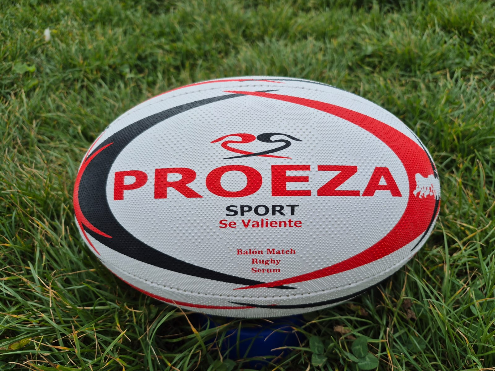
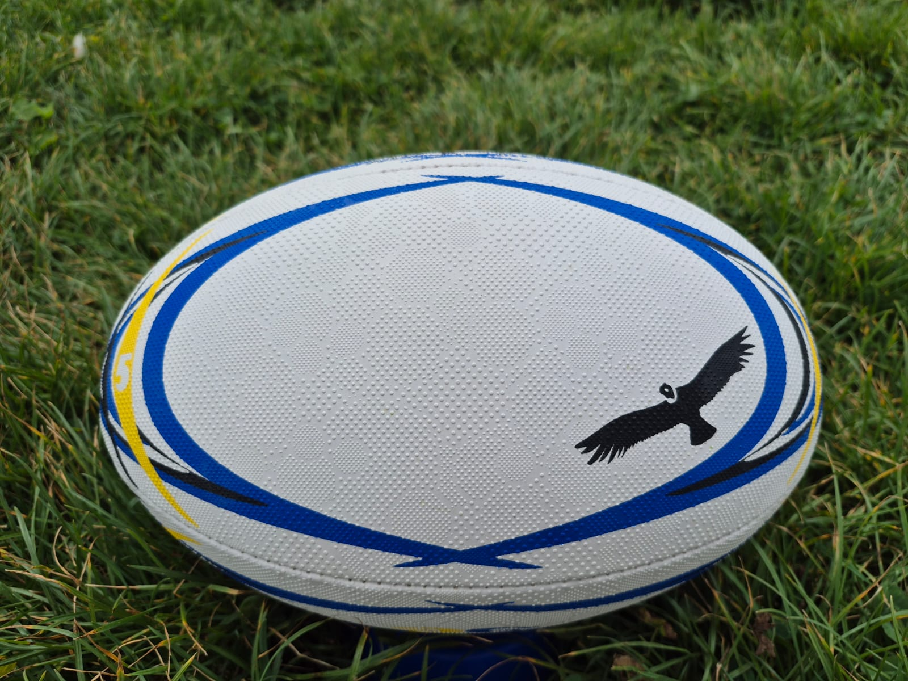
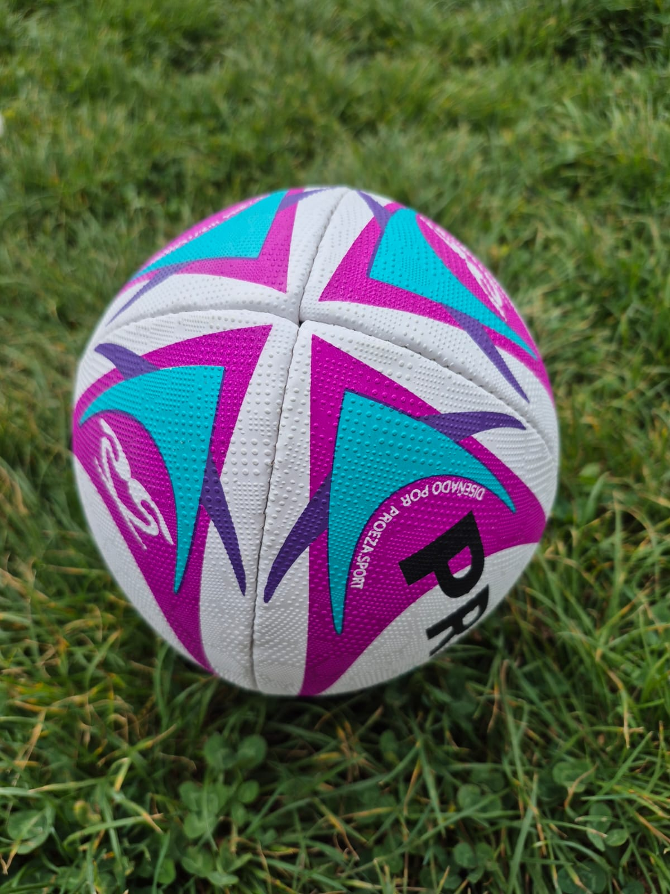
Diseños de referencia. Hay diseños propios disponibles, o cada balón se produce con los colores, el escudo y las frases del club.
Partido y entrenamiento en todas las categorías.
4 paneles cosidos a mano, con la válvula en las costuras.
Caucho premium de gran calidad: multigrip en tallas 5 y 4, y grip tradicional en talla 3. Pensado para todo clima (sol, lluvia, nieve y playa) y para pasto, pasto sintético, tierra y barro.
Capas de tela laminada que mantienen la forma.
A pedido, con los colores, el escudo y los elementos que identifican a la institución. Si no se requiere personalización, hay diseños propios disponibles.
Talla 5: match y entrenamiento. Tallas 4 y 3: entrenamiento.
Doble pestaña y perfil anatómico, en lona de PVC 10000 y relleno densidad 21
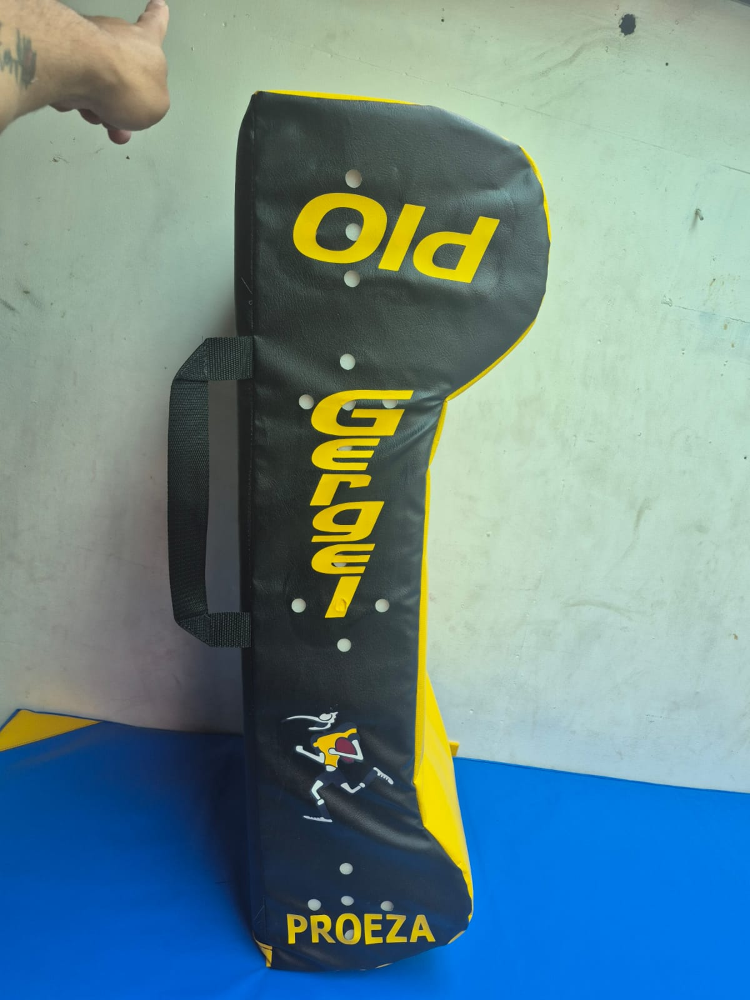
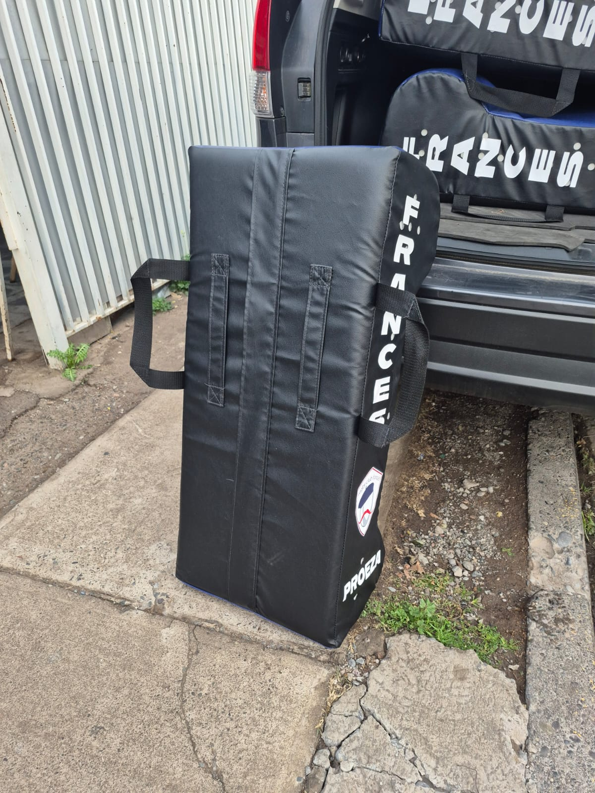
Lateral con nombre del club, espalda con correas y versión en otros colores. Trabajos realizados para otros clubes.
Entrenamiento de contacto y ejercicios varios.
Doble pestaña y perfil anatómico, con cabezal más grueso arriba que protege la cabeza y el hombro de quien lo sostiene.
Lona de PVC 10000 en todas sus caras, con costuras reforzadas.
Espuma densidad 21, probada para un contacto firme y más cómodo para el tackleador. A pedido, espuma de mayor densidad.
20 perforaciones en los laterales que dejan salir el aire con cada impacto: el escudo no rebota y las costuras no se revientan.
Dos correas para los brazos en la espalda y manilla lateral de traslado, en cinta de polipropileno con costura reforzada en cruz.
Color de la cara de impacto, nombre del club en vertical en el lateral y escudo.
Alto de 80 a 90 cm, ancho de 40 cm y espesor de 20 cm en el cuerpo y 30 cm en el cabezal.
Cilindro de contacto en distintas medidas, para tacklear y llevar al suelo
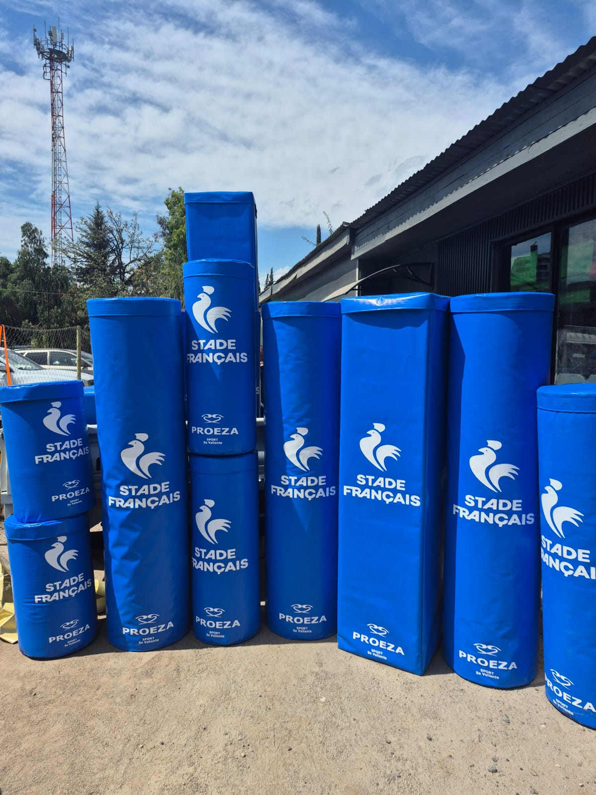
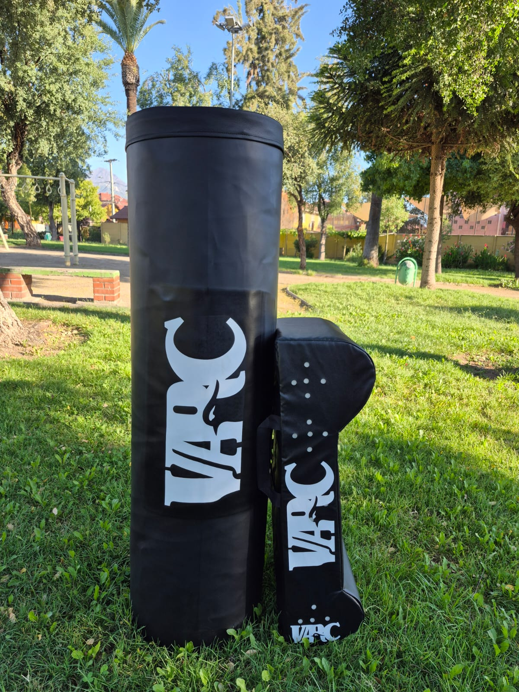
Pedidos en distintas medidas y colores. Trabajos realizados para otros clubes.
Práctica de tackle y llevada al suelo sin un compañero que sostenga, y ejercicios varios.
Cilindro con tapa y fondo cosidos y manilla en la tapa para trasladarlo.
Lona de PVC 10000; impermeable y lavable.
Espuma densidad 25. A pedido, otros tipos de espuma de mayor densidad.
Color del cuerpo y escudo o nombre del club en gran formato.
Según pedido: 140 x 40 o 45 cm, 120 x 40 cm, 100 x 40 cm y 80 x 45 cm.
Rueda acolchada para tacklear un objetivo en movimiento
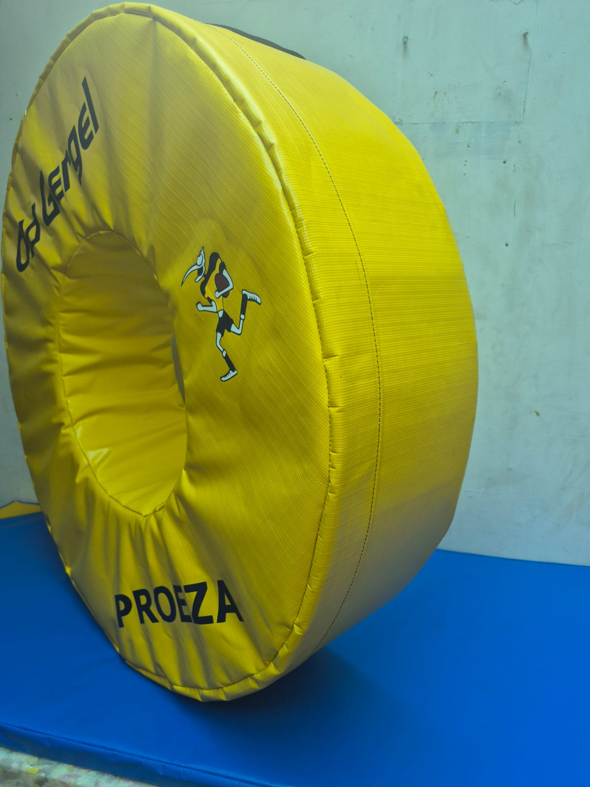
Vista frontal y lateral. Trabajo realizado para otro club.
Se hace rodar para que el jugador la persiga y la tacklee en movimiento; también se usa para la salida de balón del medio scrum y en ejercicios varios.
Rueda con centro abierto, firme para rodar recto.
Lona de PVC 10000 con trama antidesgarro y costuras perimetrales reforzadas.
Espuma densidad 21.
Nombre y logo del club en una o dos caras, según pedido.
Diámetro exterior 90 cm; espesor de la rueda 25 cm.
Funda acolchada de sección cuadrada, de 2 a 4 caras para el club y sus auspiciadores
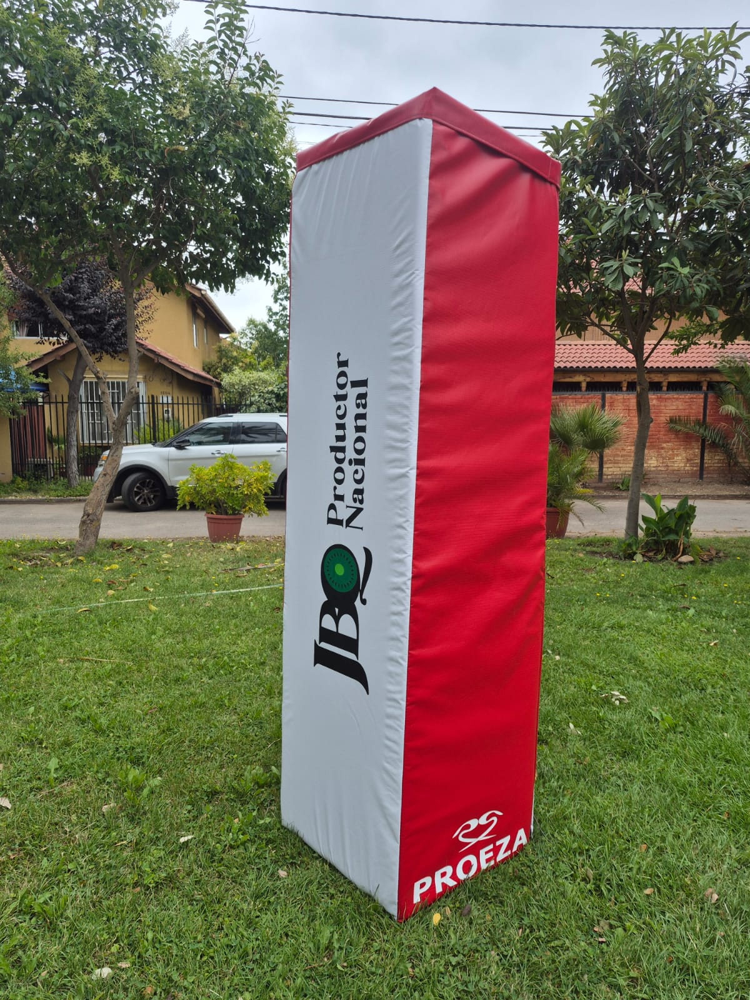
Cara con el escudo del club y cara con auspiciador. Trabajos realizados para otros clubes.
Protege a los jugadores en los choques contra la base de los postes de las H.
Sección cuadrada con abertura central para el poste y tapa superior.
Lona de PVC 10000 con trama antidesgarro, apta para estar a la intemperie.
Espuma densidad 21.
Cierre interno y velcro.
Hecho para distintas zonas climáticas, con costuras reforzadas y telas de gran calidad que disminuyen la entrada de agua a la espuma.
De 2 a 4 caras se estampan con escudo, nombre del club y auspiciadores; un auspiciador puede financiar el set.
Set de 4 cubre postes por cancha, dos por cada H. Alto de 1,8 m y 50 cm por cara.